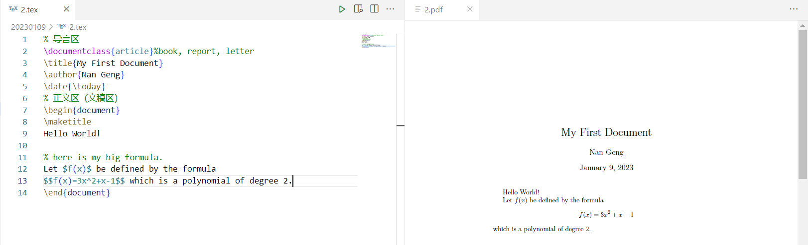
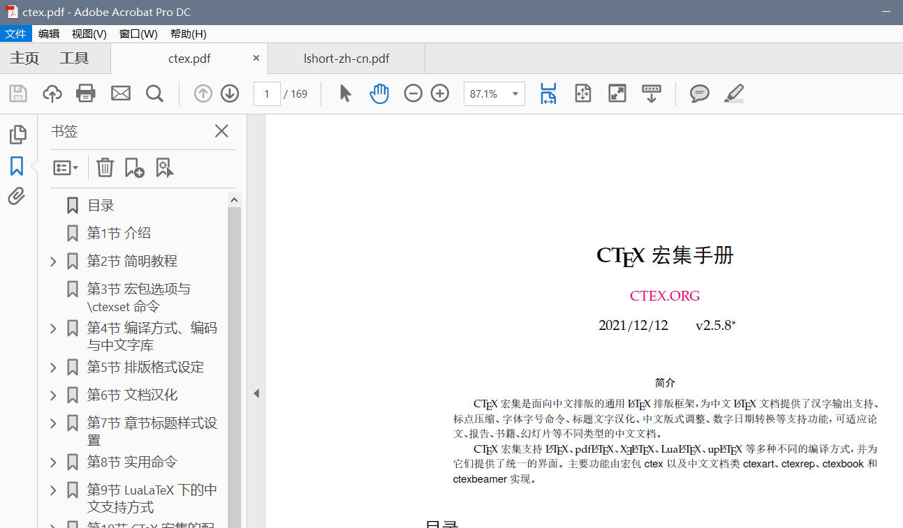
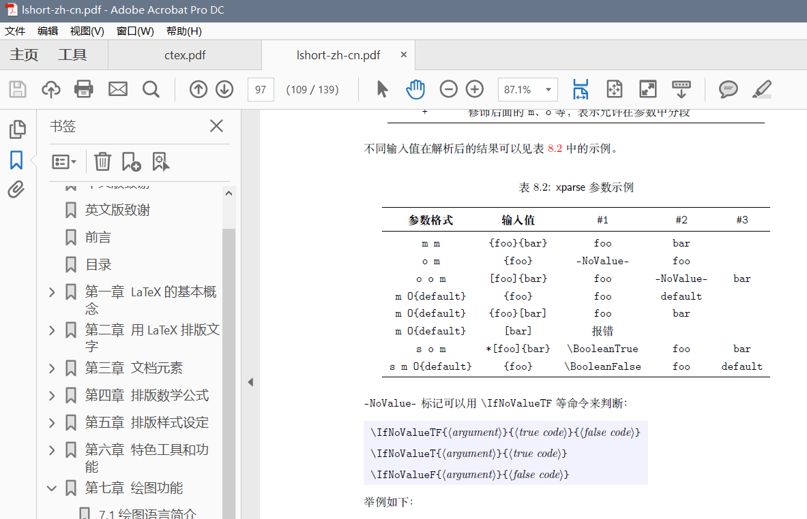

latex中文教程-15集从入门到精通包含各种latex操作 目录 资源 P1_latex01-LaTeX环境的安装与配置 安装 仅安装 $\TeX\ Live$ 即可，不要与$Mik\TeX$等混合安装！
$C\TeX$本身封装了$Mik\TeX$。
编译代码 创建test.tex文件，并输入如下内容：
\documentclass {article}\begin {document}\LaTeX \end {document}
在TERMINAL（终端）中输入latex test.tex以编译test.tex
PS D:\Study\0th-year-master\LateX\20230109> latex test.tex
此时会生成test.dvi文件，继续输入dvipdfmx test.dvi继续编译生成test.pdf文件：
PS D:\Study\0th-year-master\LateX\20230109> dvipdfmx test.dvi
或者直接输入xlelatex test.tex直接将test.tex编译生成test.pdf文件：
PS D:\Study\0th-year-master\LateX\20230109> xelatex test.tex
也可直接写一个批处理文件bulid.bat完成操作：
latex test.tex
或
xelatex test.tex
随后直接在TERMINAL（终端）中输入build命令完成编译
在VS Code中可以直接使用Ctrl+Alt+B编译
生成中文 首先需要保证tex文件使用的是utf-8编码。
使用\usepackage{ctex}引入宏包以支持中文。
\documentclass {article}\usepackage {ctex}\begin {document}\LaTeX \end {document}
使用TeXstudio（略） P2_latex02-LaTeX源文件的基本结构 \documentclass {article} \title {My First Document}\author {Nan Geng}\date {\today }\begin {document}\maketitle $ f(x)$ be defined by the formula$ $ f(x)=3x^ 2+x-1$ $ which is a polynomial of degree 2.\end {document}
分为导言区和正文区。

P3_latex03-LaTeX中的中文处理办法 处理中文 确定编译器是否为XeLaTeX且编码是否为UTF-8。
在导言区使用
\documentclass{article}
或
以支持中文。
\documentclass {ctexart}\newcommand \degree {^ \circ }\title {\heiti 杂谈勾股定理}\author {张三}\date {\today }\begin {document}\maketitle $ ABC$ ，其中 $ \angle \degree $ ，则有：\begin {equation} ^ 2 = BC^ 2 + AC^ 2.\end {equation}\end {document}
在导言区使用\newcommand\degree{^\circ}定义\degree，否则会出现编译错误。
使用\begin{equation}和\end{equation}产生带编号的行间公式。
查看帮助文档 在TERMINAL（终端）中输入texdoc ctex命令：

输入texdoc lshort-zh命令：

P4_latex04-LaTeX的字体字号设置 字体属性 在 $\LaTeX$ 中，一个字体有5 种属性：
字体编码
正文字体编码：OT1、T1、EU1等
数学字体编码：OML、OMS、OMX 等
字体族
罗马字体 Roman Family \textrm：笔画起始处有装饰
无衬线字体 Sans Serif Family \textsf：笔画起始处无装饰
打字机字体 Typewriter Family \texttt：每个字符宽度相同，又称等宽字体
字体系列
字体形状
直立 Upright Shape
斜体 Italic Shape
伪斜体 Slanted Shape
小型大写 Small Caps Shape
字体大小
字体族设置 注意修饰符及其作用域范围：
\textrm {Roman Family}\textsf {Sans Serif Family}\texttt {Typewriter Family}\rmfamily Roman Family\sffamily Sans Serif Family}\ttfamily Typewriter Family}\sffamily who you are? you find self on everyone around.\ttfamily Are you wiser than others?
字体系列设置（粗细、宽度） \textmd {Medium Series} \textbf {Boldface Series}\mdseries Medium Series} {\bfseries Boldface Series}
字体形状（直立、斜体、伪斜体、小型大写） \textup {Upright Shape}\textit {Italic Shape}\textsl {Slanted Shape}\textsc {Small Caps Shape}\textup Upright Shape}\textit Italic Shape}\textsl Slanted Shape}\textsc Small Caps Shape}
中文字体 \songti 宋体}\heiti 黑体}\fangsong 仿宋}\kaishu 楷书}\textbf {粗体}是{\heiti 黑体}，\textit {斜体}是{\kaishu 楷体}。
字体大小 \tiny Hello}\\ \scriptsize Hello}\\ \footnotesize Hello}\\ \small Hello}\\ \normalsize Hello}\\ \large Hello}\\ \Large Hello}\\ \LARGE Hello}\\ \huge Hello}\\ \Huge Hello}\\
中文字号设置命令 自定义字体 过多的修饰符不符合$\LaTeX$的思想，使用\newcommand自定义字体。
导言区中：
\newcommand {\myfont }{\textbf {\textsf {Fancy Text}}}
会将正文区所有\myfont替换为\textbf{\textsf{Fancy Text}}
P5_latex05-LaTeX文档的基本结构 分节 在正文区中，使用\section{}列提纲，分节，可以使用\subsection{}和\subsubsection{}继续分节。
\documentclass {article}\usepackage {ctex}\begin {document}\section {引言}\section {实验方法}\section {实验结果}\subsection {数据}\subsection {图表}\subsubsection {实验条件}\subsubsection {实验过程}\section {结论}\section {致谢}\end {document}
设置格式 使用\documentclass{ctexart}会更改格式，但是这个格式可以自行设置。
在导言区设置格式。将内容与格式分离，是$\LaTeX$的基本思想。
\documentclass {ctexart}\ctexset {\chinese {section}},\heiti \raggedright \zihao {-4}, \hspace {0pt},\arabic {subsection}},\heiti \zihao {5}, \hspace {0pt},\begin {document}\section {引言}\\ \par 很多研究机构和商业公司都陆续推出了自己的三维重建系统。\section {实验方法}\section {实验结果}\subsection {数据}\subsection {图表}\subsubsection {实验条件}\subsubsection {实验过程}\section {结论}\section {致谢}\end {document}
使用空行或\par可以另起一段
使用\\会换行，但是不会另起一段
设置目录 使用\documentclass{ctexbook}和\tableofcontents生成目录。
\documentclass [UTF8,a4paper,15pt,titlepage,oneside]{ctexbook}\begin {document}\tableofcontents \chapter {绪论}\section {引言}\\ \par 很多研究机构和商业公司都陆续推出了自己的三维重建系统。\section {实验方法}\section {实验结果}\subsection {数据}\subsection {图表}\section {结论}\section {致谢}\end {document}
P6_latex06-LaTeX中的特殊字符